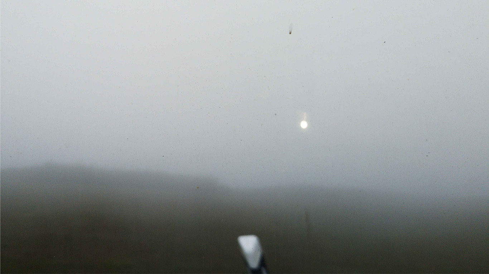

pt-nl, 2001
contact.joanafranco@gmail.com
cv
i, while counting the i's, am working with perception and consequences thereof. I give to you what I wish to return to myself one day, and think of ways to make clear we are one, through contrasts that lie, saying we are two.
where two opposites meet is where I'd like to be.
currently working with the portuguese words eu dou-te-me, (i give you to me)
education
2019-2021. Royal Academy of Art, The Hague
2021-2023. AkiArtez Academy of Art and Design, Enschede
2023-2025. Frank Mohr Institute, Groningen
exhibitions
individual
2021. Of Inside Of, Cultural Institute of Ponta Delgada, Açores
collective
2025. MAFAD final exhibition, NP3 . Re:Search:Gallery, Groningen
2025. RE:Store #4, NP3 . Re:Search:Gallery, Groningen
2025. RE:Store #3, NP3 . Re:Search:Gallery, Groningen
2025. RE:Store #1, NP3 . Re:Search:Gallery, Groningen
2024. Sometimes It Snows in April, Galerie Pouloeuff, Naarden
2023. Alter House Opening, I’m Studio, Amsterdam
2023. Fresh Cacao, De Cacao Fabriek, Helmond
2023. Bachelor's graduation ('Assuming Material Form'), AKI ArtEZ, Enschede
2023. RMTxAKI, Rijksmuseum Twenthe, Enschede
2021. Wind Polinators, SoZa, The Hague
2020. We Never Say Never, VAGA, Ponta Delgada
publications
2025. Metropolis M, Graduation Magazine, Eva Waterbolk - link
2024. Liter 112, Maarten Buser - link
2024. De Lage Landen, Maarten Buser - link
awards
2019. (Residency) Young Creators Award 2020, Walk&Talk Azores
2023. Nominated Carat Lucas Gassel-Prijs